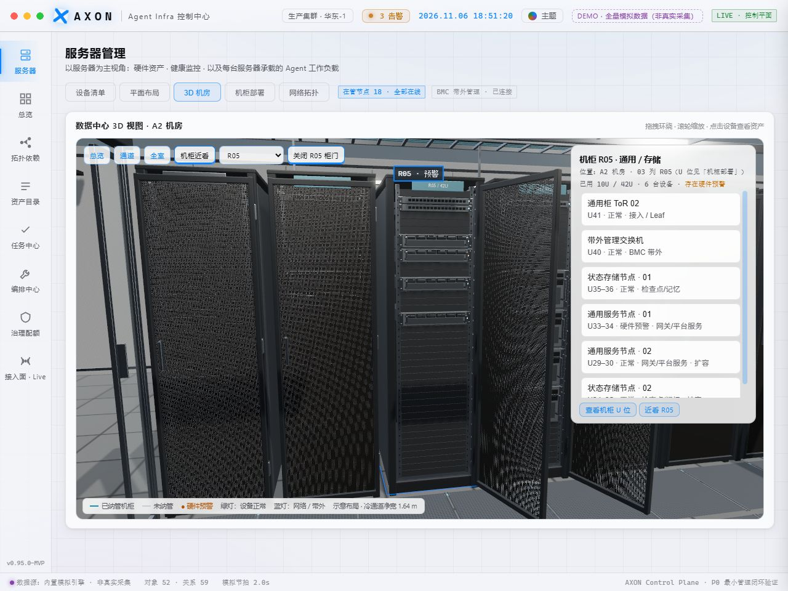
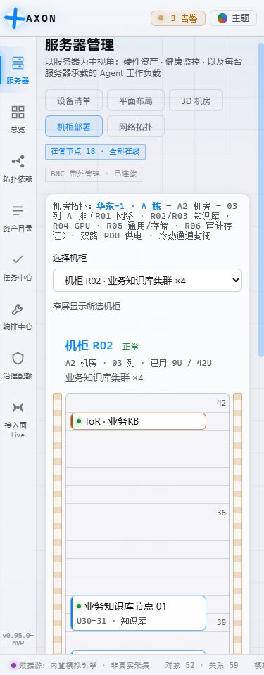

22 → 0纵向溢出的设备标签
26 台 / 6 柜共享 U 位布局
80 / 80自动回归通过
8 套主题实际页面检查
标准间距 26px/U，详情间距 30px/U；1U 标签 24px 高、单行显示，2U 标签 50px 高、两行显示。完整名称、角色、位置和健康状态可通过点击或 Enter 查看。
地图设最小可读宽度，容器内横向滚动；下拉选择与地图选择同步，纳管机柜支持 Enter / 空格。
可选择全部机柜或聚焦单柜；全图采用独立滚动区域。设备清单显示完整名称、U 位、状态及角色，Canvas 点击按实际位置命中。
3D 机房 · R05 预警标签与可操作设备清单
标签按实际尺寸避让工具栏、HUD 和其他标签；选中和预警机柜优先。手机宽度下详情移到画布下方。
375px · 单柜设备标签
375px · 3D 画布不被详情遮挡